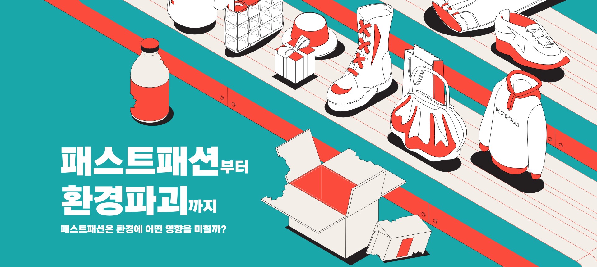
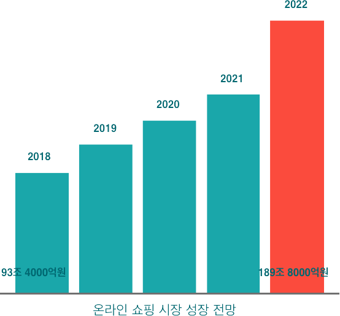
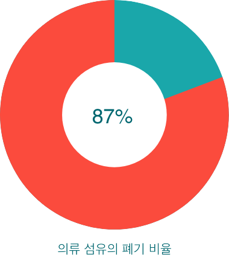
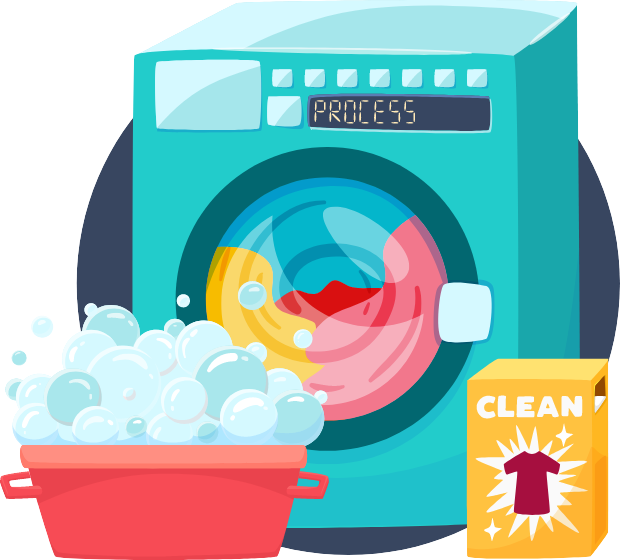

코로나의 여파로 인한 비대면 시대의 도래와
온라인 쇼핑 시장의 지속적인 성장
국내 일정 평균 의류 폐기물량이
2014년에 비해 2018년 32% 가량 증가

의류 산업에 사용한 섬유의
약 87%가 소각되거나 매립시에 폐기됨
패션산업이 전세계 폐수 배출량의 20%
탄소배출량의 10%를 차지

폴리에스터 섬유를 주로 사용하는 패스트패션은
세탁시에도 문제가 된다. 세탁할 때 나오는 플라스틱
미세 섬유 조각이 바다로 흘러가며 이 조각들은
계속 축적되어 해양을 오염시키고 있다.
의류 폐기과정에서 폐섬유와 폐피혁은 재활용이
불가능하여 소각 처리만이 유일한 해결책이다.
이런 소각 과정에서 발암물질인 휘발성 유기화합물이
나와 끊임없이 환경오염을 시키고있다.